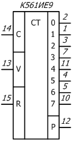
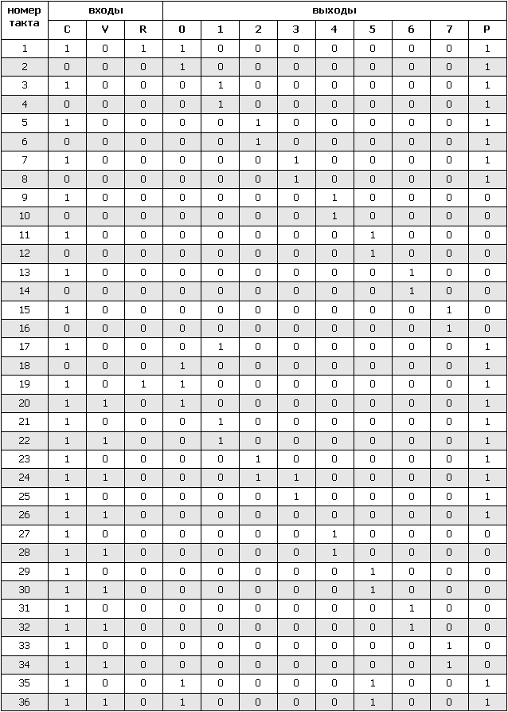

Микросхемы К561ИЕ9, ЭК561ИЕ9
Микросхемы К561ИЕ9 и ЭК561ИЕ9 представляют собой счетчик-делитель на восемь. В ИС используется восьмеричный код Джонсона (когда счетчик переходит к следующему логическому состоянию, меняется только одна логическая переменная). В качестве одного разряда счетчика используется тактируемый MS-триггер типа D с непосредственным входом установки 0. Содержат 168 интегральных элементов.

Рис. 1 - Условное графическое обозначение микросхем К561ИЕ9, ЭК561ИЕ9
Назначение выводов
1 — выход 1;
2 — выход 0;
3 — выход 2;
4 — выход 5;
5 — выход 6;
6 — свободный;
7 — выход 3;
8 — общий ("-");
9 — свободный;
10 — выход 7;
11 — выход 4;
12 — выход переноса;
13 — разрешение синхронизации;
14 — вход синхронизации;
15 — установка нуля;
16 — "+" напряжение питания.
Таблица 1
| Напряжение питания | 3…15 В |
| Выходное напряжение низкого уровня при воздействии помехи при Uп= 10 В | ≤1 В |
| Выходное напряжение высокого уровня при воздействии помехи при Uп= 10 В | ≥9 В |
| Ток потребления при Uп= 15В | ≤20 мкА |
| Входной ток низкого (высокого) уровня при Uп= 15В | ≤0,3 мкА |
| Выходной ток низкого (высокого) уровня при Uп= 10В | ≥0,35 мА |
| Время задержки распространения при включении (выключении) при Uп= 10 В по выводам: от 14 до выходов 0-9; от 13 до выходов 0-9;от 14 до 12; от 13 до 2 |
≤350 нс |
| Время задержки распространения при включении при Uп= 10 В по выводам от 15 до выходов 1-9 | ≤350 нс |
| Время задержки распространения при выключении при Uп= 10В по выводам от 15 до 3, 12 | ≤350 нс |
| Максимальная тактовая частота при Uп= 10В | 3 МГц |
Таблица 2
| Напряжение между выводами 8 и 16, 7 и 16 | 3…15 В |
| Входное напряжение | -0,2…(Uп+0,2) В |
| Максимальный ток по любому выводу | 10 мА |
| Максимальная мощность на выход | 100 мВт |
| Максимальная рассеиваемая мощность | 200 мВт |
| Максимальная емкость нагрузки | 3000 пФ |
| Максимальное время фронта и среза тактовых импульсов | 15 мкс |
| Минимальная длительность импульсов установки в ноль: | |
| при Uп= 5 В | 500 нс |
| при Uп= 10 В | 165 нс |
| Температура окружающей среды | .-45…+85 °С |
Таблица 3
Таблица истинности
